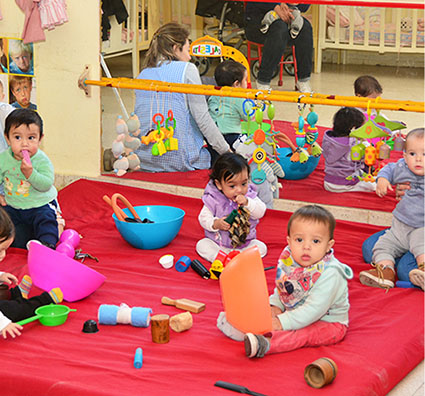
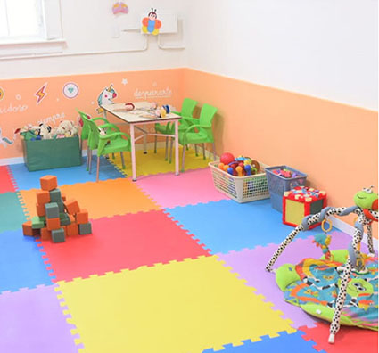
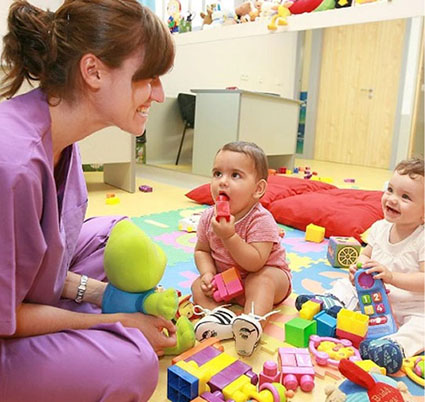

Jardín Maternal
Salas de lactantes, deambuladores y 2 años.
Espacios cuidados para favorecer el desarrollo emocional y motriz desde los primeros meses.



Cada niño está en capacidad para alcanzar su autenticidad. Se promueven acordes a sus necesidades y desafíos que guían con sensibilidad y compromiso.
Salas de lactantes, deambuladores y 2 años.
Espacios cuidados para favorecer el desarrollo emocional y motriz desde los primeros meses.